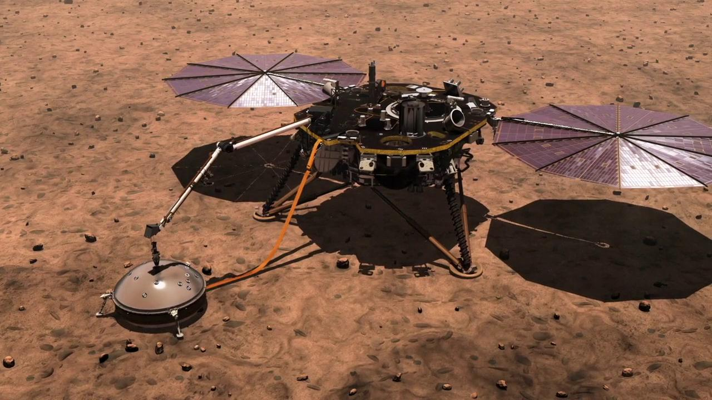

A Sol year is 668 days long, with the year starting when the InSight Landed on Mars. A Sol day is longer than a day on Earth (24 hours, 39 minutes and 35 seconds long).

The InSight Lander was created and used by NASA's Discovery Program to collect various data points from Mars to learn more about how our solar system formed over 4 billion years ago. Learn more about the InSight Lander’s mission here.